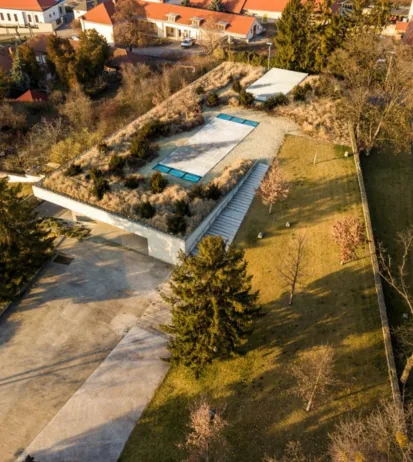
Phase 1 · gate 1 · approved 2026-09-16 (D12)
Everything on this page is the system itself, rendered live from assets/tokens.css and the two Google Fonts faces — not a mock-up of it. Approved by the owner on 2026-09-16 (D12); every page since is built from it. Anything new is brought here first.
Measured from the live site's Elementor kit. One accent. No gold, no dark sections. Semantic states (error, success) will be added only when a form needs them.
#FAFAFAground · page
#FFFFFFcard
#F4F4F4band · full-bleed section
#D9D9D9line
#B8A689accent · buttons, rules, active
#8B705Baccent deep · hover, links
#9B9796grey · captions
#666666muted text
#1D1D1Bink · type, phone bar
Bodoni Moda (optical size) for the sentence, the headings, the numbers and the wordmark. Archivo at width 112.5 for everything else — nav, body, labels, prices. Nothing is set in a third face. Desktop sizes shown; phone sizes in brackets.
Hero sentence · 64 (34)
A tokaji álmot töltjük pohárba az élet nagy pillanataihoz
Section heading · 40 (26)
Hét dűlő, harminc parcella
Card title · 28 (20)
Borkóstoló a föld alatt
Number · 56 (30)
1,8 km · 3 szint · 500 év
Body · Archivo 15
Évekig tartó tudatos keresés, hagyománytisztelő, de mégis kreatív kísérletezés — Mádon, a Tokaj-Hegyalja szívében, 1,8 kilométernyi pincelabirintus mélyén. A sor hossza legfeljebb 62 karakter.
Label · 12 / 0.14em
Tokaji száraz furmint · Király-dűlő
Price · Archivo 18 medium
15 500 Ft · 27 500 Ft-tól · 133 000 Ft
Wordmark · 22 / 0.18em
HOLDVÖLGY
Scale 4 · 8 · 12 · 16 · 24 · 32 · 48 · 64 · 96. Desktop: 12 columns, content 1280, gutter 24, margins 80. Phone: single column, margins 16. Corners are square (2 px only to soften aliasing) — the brand's own buttons and cards are square. Tap targets 44 px everywhere.
Primary is the greige; it darkens to the deep accent on hover. Secondary is outlined ink. Tertiary is a text button. On photographs both buttons are white. Focus is always a visible 2 px ring.
On a photograph
White on the ground, a soft line, square corners, image on top, Bodoni title, one or two lines, a text button. Same edges and baselines across a row.

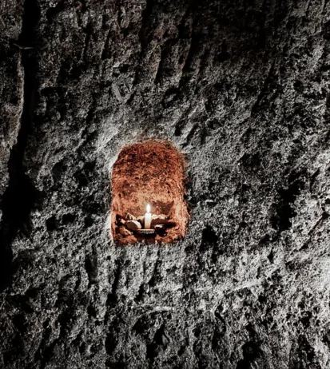
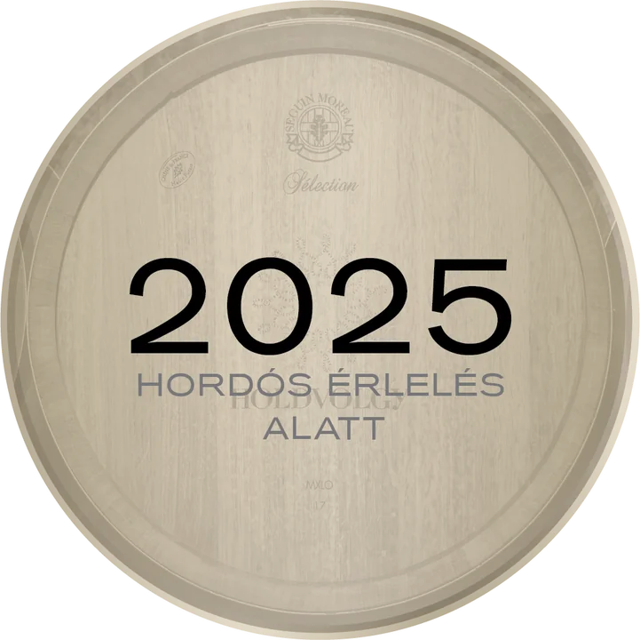
The estate's own transparent renders on the band colour — objects, never panels. A soft drop shadow, a 6 px lift on hover. Name in Archivo medium, line as a label, from-price beneath. This is the component the shop is built from.
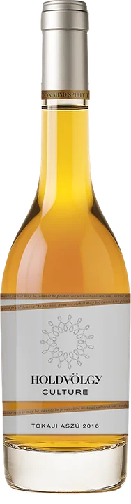
Culture6 puttonyos tokaji aszú27 500 Ft-tól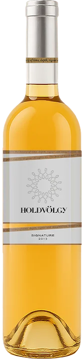
Signature 2013édes birtokválogatás10 000 Ft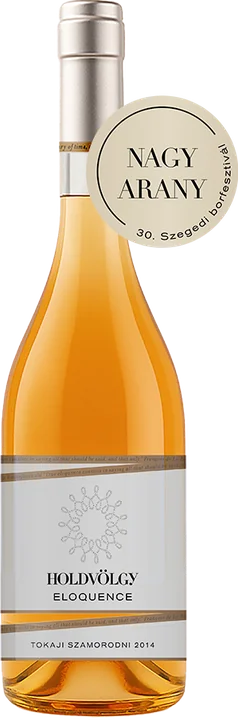
Eloquence 2014édes szamorodni7 000 Ft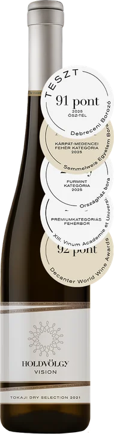
Vision 2021száraz birtokválogatás5 500 Ft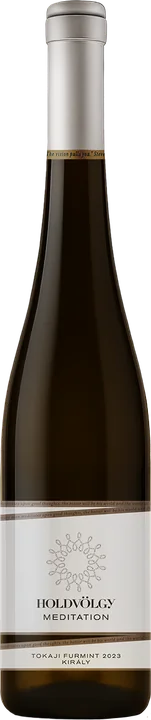
Meditation 2023Furmint · Király15 500 Ft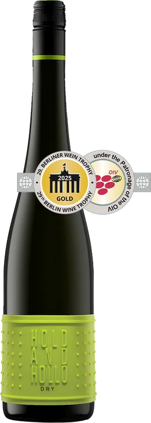
Hold and Hollo Dryszáraz válogatás4 000 FtThe rock photograph as the thumbnail — the asset nobody else has. Name in Bodoni, varieties as a caption.
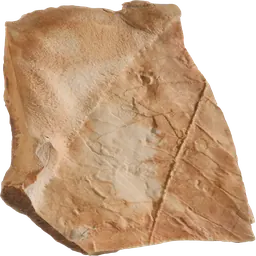
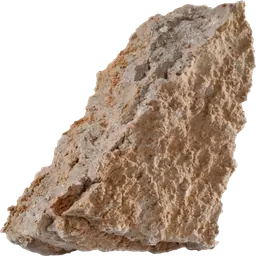
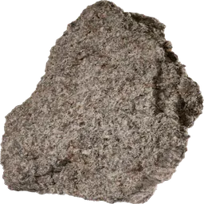
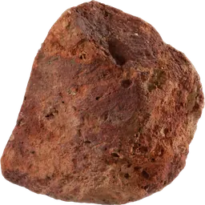
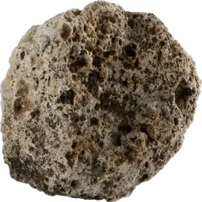
Two systems (D5). Desktop: sticky 88 px header, wordmark, five items, HU/EN, Foglalás, cart — mega-panels on Borok and Látogatás. Phone: 60 px header with wordmark and cart only; navigation is the fixed ink-coloured bottom bar, under the thumb.
Phone
The palette, the two faces and their roles, the type scale, spacing, corners, the button set, the card, the bottle component, the dűlő row and the two navigation systems are fixed. Layouts (next gate) arrange these; pages (third gate) are built from them. Anything not on this page is not in the system yet and will be brought here first.